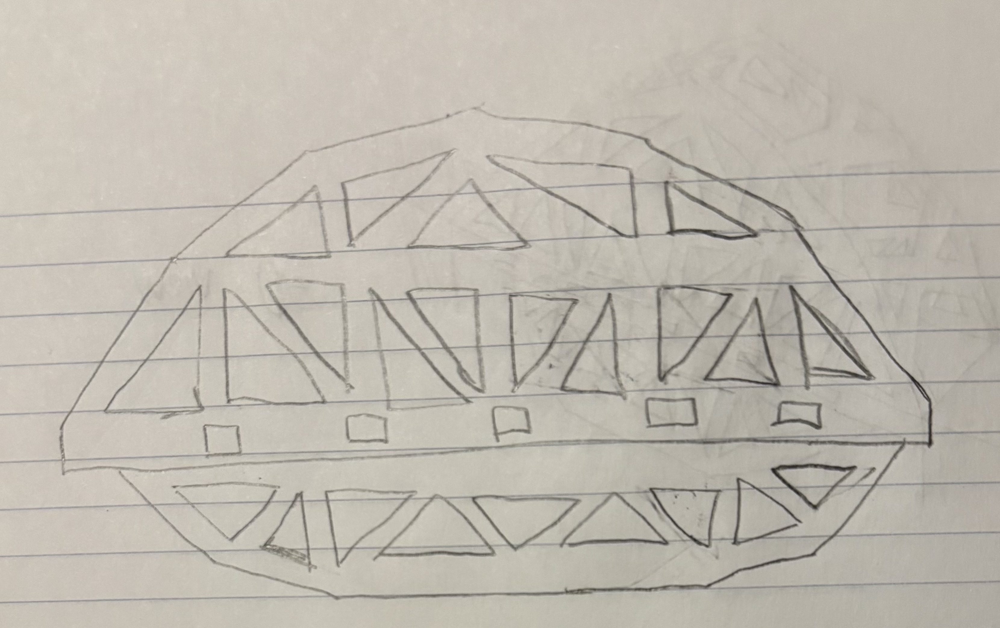
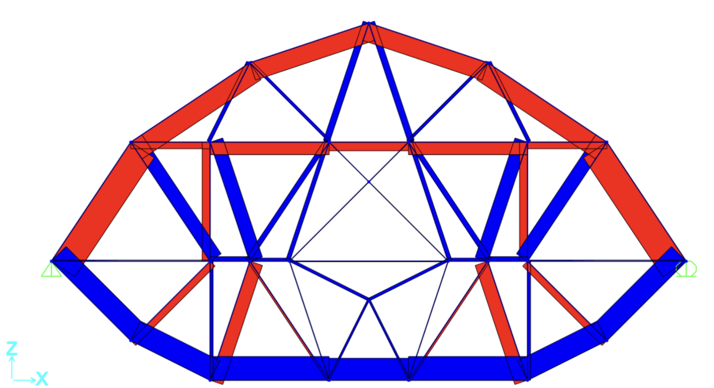
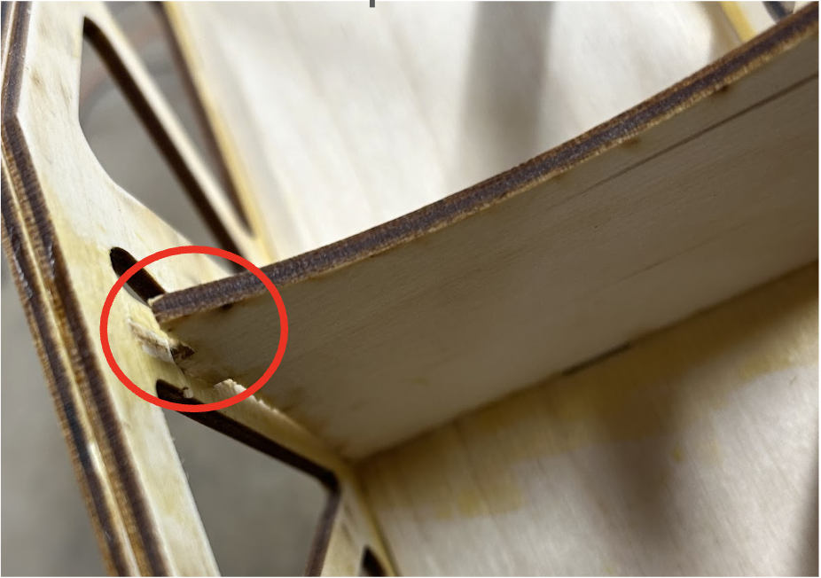

ENGS 33 - Solid Mechanics · Dartmouth College
Scale Bridge
Iteratively designed a scale wooden bridge using SolidWorks FEA that was then tested under Instron.

Overview
Tasked with creating a bridge out of 3mm and 6mm plywood using SAP2000 and SolidWorks Finite Element Analysis. Developped novel design incorporating mixture of 3mm and 6mm plywood by stacking trusses in high stress areas. Ultimately created a bridge with the second lowest mass and lowest deflection to mass ratio in the class.
Results
4.2 kNLoad Supported
0.171 mmDeflection
306.9 gMass
Responsibilities
- Designed and tested bridge designs in SAP2000
- Built SAP2000 design as a SolidWorks assembly
- Ran Finite Element Analysis and iteratively redesigned bridge based on results
- Laser cut and glued pieces to build bridge and test in Instron machine
Iteration
Hand Drawing Superseded

- Hand drawing combining designs by each group member inspired by research each of us did
SAP2000 Design Superseded

- Final SAP2000 design showing tension (blue) and compression (red) on each member
- Developed through iterative testing of member thickness, truss height, and truss design
SolidWorks Design Current

- The final Finite Element Analysis of the bridge showing stress concentrations
Bridge Failure

The bridge suffered from buckling in the top members that didn't have canopies. This aided in shearing the glue bond between the crossmember and the truss.